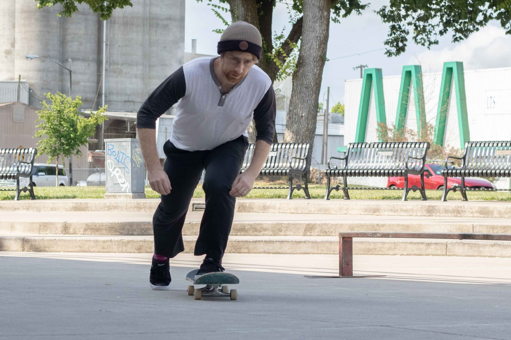
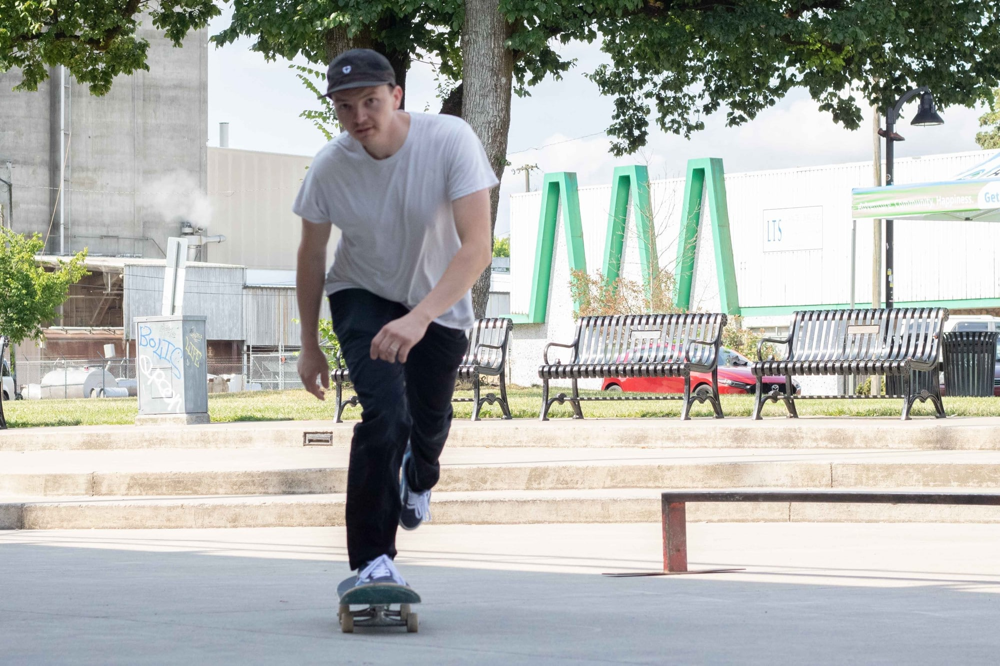
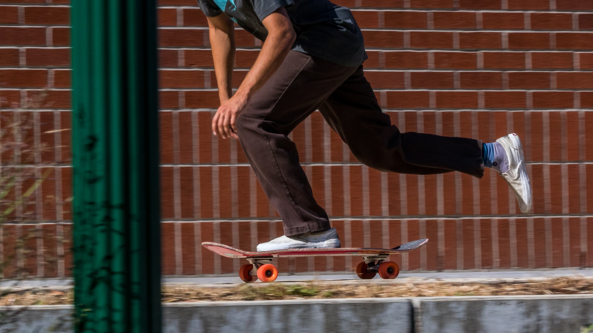

Skateboarding began in the 1950s and quickly became associated with Southern California’s surf-culture. All of the skateboarding in these early years was on streets, sidewalks, paths and plazas. Skateboards made from repurposed roller skates was a national craze in the 1950s. By the 1960s, companies were manufacturing skateboards. In the 1970s the use of urethane wheels allowed skating on rougher terrain and helped skateboarding gain a fresh wave of national popularity. This era introduced us to the first parks built specifically for skateboarding.
These early skateparks featured concrete shaped into round bumps, channels, and bowls that vaguely resembled empty swimming pools and moguls. Around the same time, wooden halfpipes were cropping up on television and in backyards, allowing spectators to better see the activity. Skateboarding’s popularity peaked.
Those first-generation skateparks were almost all retail businesses. To use them you had pay an entrance fee or needed some kind of membership. Nearly all of the skateparks from the 1970s era are gone today. By the end of the ‘70s, laws about liability were changed and insurance companies became nervous about these parks. Most skateparks had slim profit margins to begin with, but when insurance rates exploded, the small businesses went under.
By 2000 skateparks were being promoted and built across the nation. Advocates were getting more effective, and the skateparks started getting bigger and better. Communities began to understand that some skateparks perform better than others. Concrete skateparks became more popular than wood or steel. Skateparks began to be built downtown, near where people lived and worked, rather than in the outskirts of town, away from everything. Lots of lessons were learned
Regular
Regular footed means you feel more comfortable with your left foot in front.

Goofy
Goofy footed means you feel more comfortable with your right foot in front.


1). Place your front foot at a 30-degree angle near your front hardware bolts.
2). Bend your front knee so your back leg can reach the ground.
3). While balancing all your weight on your front foot, reach down and push off with your back foot.
4). Return your back foot to the board at a slight angle near the back hardware bolts
TIP: It helps to practice balancing only on your front foot. Once you are confident doing this, you'll be able to push continuously whenever you need.